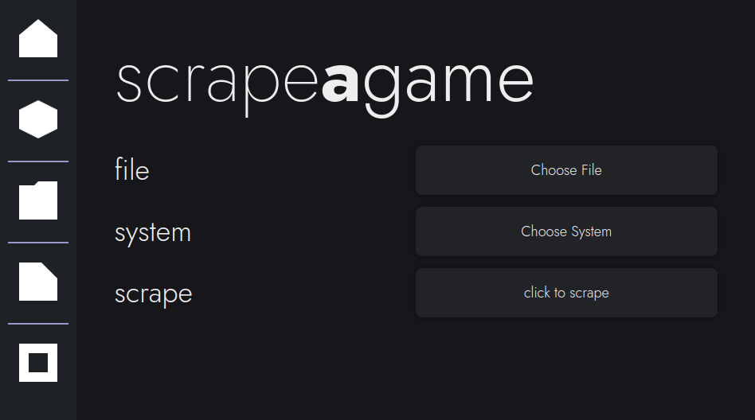
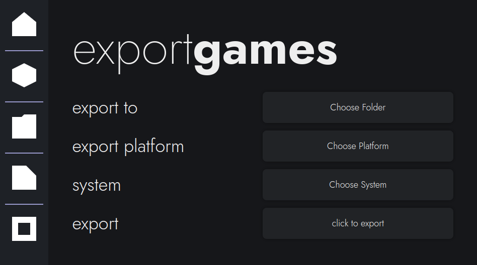
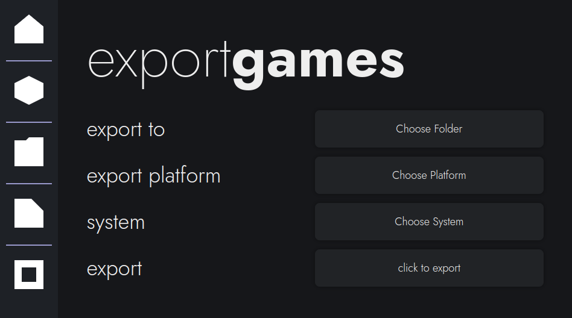

bigscraper
gui
Launchbox Scraping for Linux
What is it?
Bigscraper is a tool that allows you to gather metadata (information, images & more) from the Launchbox Games Database. By automating the process of reading the website, bigscraper is able to use the Launchbox database to its advantage, allowing you to gather metadata for the games on your system.
Features
Launchbox Scraping
Bigscraper is the only tool available on Linux that easily scrapes Launchbox. By reading the websites Launchbox provides, bigscraper is able to gather metadata off of Launchbox.
Linux + Pegasus First
Bigscraper is a tool that helps to make the hardest part of setup for the Pegasus Frontend very easy. As well, it emphasizes Linux, which doesn't have a way to automatically scrape Launchbox. Bigscraper still provides the option to export to EmulationStation, however.
GUI
To enable many to use this tool, I have made this a GUI tool. Yes, it does use electron (explanation why here), which has many problems regarding resource usage, but it still manages to be more user-friendly than some CLI tools. CLI bigscraper does exist, however, though it does lack a few features regarding scraping.
Gallery
 

Installation
If this has enticed you, then installing this software is quite easy. Simply download the latest AppImage (or Flatpak Bundle), install & run, and read the guide to get started.